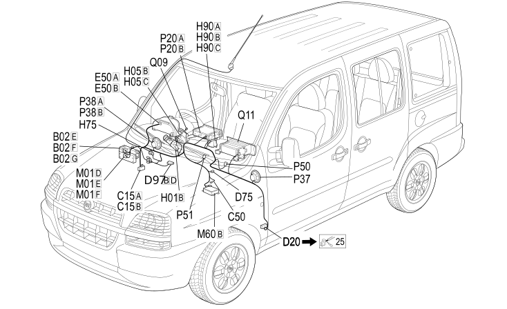

20 DASHBOARD
- Path
- Electrical equipment > 2 WIRING > 20 DASHBOARD
- Kind
- wiring harness
- Applies to
- engines: 1.2 8v, 1.6 16v, 1.9 JTD 8V, 1.9 DIESEL; all production periods; only with equipment: Right hand drive
- Interactive page
- https://sloeber94.github.io/elrnDB-fDbl/en/#/223003620
Applies to: engines: 1.2 8v, 1.6 16v, 1.9 JTD 8V, 1.9 DIESEL; all production periods; only with equipment: Right hand drive

Topics that link to this page (123)
- B002E JUNCTION UNIT UNDER DASHBOARD (FACIA)
- B002E JUNCTION UNIT UNDER DASHBOARD (FACIA)
- B002E JUNCTION UNIT UNDER DASHBOARD (FACIA)
- B002F JUNCTION UNIT UNDER DASHBOARD (FACIA)
- B002G JUNCTION UNIT UNDER DASHBOARD (FACIA)
- B002G JUNCTION UNIT UNDER DASHBOARD (FACIA)
- B2E JUNCTION UNIT UNDER DASHBOARD ( FACIA )
- B2E JUNCTION UNIT UNDER DASHBOARD ( FACIA )
- B2E JUNCTION UNIT UNDER DASHBOARD ( FACIA )
- B2E JUNCTION UNIT UNDER DASHBOARD ( FACIA )
- B2F JUNCTION UNIT UNDER DASHBOARD ( FACIA )
- B2G JUNCTION UNIT UNDER DASHBOARD ( FACIA )
- C015A FACIA EARTH, DRIVER'S SIDE (FACIA)
- C015A FACIA EARTH, DRIVER'S SIDE (FACIA)
- C15A FACIA EARTH, DRIVER'S SIDE ( FACIA )
- C15A FACIA EARTH, DRIVER'S SIDE ( FACIA )
- C15B FACIA EARTH, DRIVER'S SIDE ( FACIA )
- C050A AIR BAG EARTH (FACIA)
- C50 AIR BAG EARTH ( FACIA )
- D001 FRONT/FACIA JUNCTION (FACIA)
- D020A FACIA/REAR JUNCTION (FACIA)
- D020A FACIA/REAR JUNCTION (FACIA)
- D020A FACIA/REAR JUNCTION (FACIA)
- D020A FACIA/REAR JUNCTION (FACIA)
- D020A FACIA/REAR JUNCTION (FACIA)
- D020A FACIA/REAR JUNCTION (FACIA)
- D020A FACIA/REAR JUNCTION (FACIA)
- D020A FACIA/REAR JUNCTION (FACIA)
- D020B FACIA/REAR JUNCTION (FACIA)
- D20 DASHBOARD/REAR COUPLING ( FACIA )
- D20 DASHBOARD/REAR COUPLING ( FACIA )
- D75 RADIO PHONE JUNCTION ( FACIA )
- D097B SHORT CIRCUITING COUPLING (FACIA)
- D097B SHORT CIRCUITING COUPLING (FACIA)
- D097D SHORT CIRCUITING COUPLING (FACIA)
- D097D SHORT CIRCUITING COUPLING (FACIA)
- D097D SHORT CIRCUITING COUPLING (FACIA)
- D097D SHORT CIRCUITING COUPLING (FACIA)
- D97B SHORT CIRCUITING COUPLING ( FACIA )
- D97D SHORT CIRCUITING COUPLING ( FACIA )
- D97D SHORT CIRCUITING COUPLING ( FACIA )
- D099 RADIO PHONE PREPARATION COUPLING (FACIA)
- E050A INSTRUMENT PANEL (FACIA)
- E050A INSTRUMENT PANEL (FACIA)
- E050B INSTRUMENT PANEL (FACIA)
- E050B INSTRUMENT PANEL (FACIA)
- E050B INSTRUMENT PANEL (FACIA)
- E50A INSTRUMENT PANEL ( FACIA )
- E50A INSTRUMENT PANEL ( FACIA )
- E50B INSTRUMENT PANEL ( FACIA )
- E50B INSTRUMENT PANEL ( FACIA )
- E50B INSTRUMENT PANEL ( FACIA )
- E50B INSTRUMENT PANEL ( FACIA )
- E50B INSTRUMENT PANEL ( FACIA )
- H001B IGNITION SWITCH (FACIA)
- H1B IGNITION SWITCH ( FACIA )
- H005B STEERING COLUMN SWITCH UNIT (FACIA)
- H005C STEERING COLUMN SWITCH UNIT (FACIA)
- H005C STEERING COLUMN SWITCH UNIT (FACIA)
- H5B STALK UNIT ( FACIA )
- H5C STALK UNIT ( FACIA )
- H5C STALK UNIT ( FACIA )
- H075 PASSENGER'S AIR BAG DISABLEMENT SWITCH (FACIA)
- H75 PASSENGER'S AIR BAG DISABLEMENT SWITCH ( FACIA )
- H090A SWITCH CONTROL UNIT (FACIA)
- H090B SWITCH CONTROL UNIT (FACIA)
- H090C SWITCH CONTROL UNIT (FACIA)
- H090C SWITCH CONTROL UNIT (FACIA)
- H90A SWITCH CONTROL UNIT ( FACIA )
- H90B SWITCH CONTROL UNIT ( FACIA )
- H90C SWITCH CONTROL UNIT ( FACIA )
- H90C SWITCH CONTROL UNIT ( FACIA )
- J146 TELEDEVIATORE ESCLUSIONE BUZZER CINTURE (FACIA)
- J146 TELEDEVIATORE ESCLUSIONE BUZZER CINTURE (FACIA)
- M001D BODY COMPUTER (FACIA)
- M001D BODY COMPUTER (FACIA)
- M001E BODY COMPUTER (FACIA)
- M001E BODY COMPUTER (FACIA)
- M001F BODY COMPUTER (FACIA)
- M001F BODY COMPUTER (FACIA)
- M1D BODY COMPUTER ( FACIA )
- M1E BODY COMPUTER ( FACIA )
- M1F BODY COMPUTER ( FACIA )
- M048 (FACIA)
- M048 (FACIA)
- M060A AIR BAG CONTROL UNIT (FACIA)
- M60A AIR BAG CONTROL UNIT ( FACIA )
- P020A RADIO (FACIA)
- P020A RADIO (FACIA)
- P020B RADIO (FACIA)
- P020B RADIO (FACIA)
- P020B RADIO (FACIA)
- P020B RADIO (FACIA)
- P020B RADIO (FACIA)
- P020C RADIO (FACIA)
- P020D RADIO (FACIA)
- P20A CAR RADIO ( FACIA )
- P20A CAR RADIO ( FACIA )
- P20B CAR RADIO ( FACIA )
- P20C CAR RADIO ( FACIA )
- P20D CAR RADIO ( FACIA )
- P025 AERIAL POWER SUPPLY/AMPLIFIER (FACIA)
- P025 AERIAL POWER SUPPLY/AMPLIFIER (FACIA)
- P25 AERIAL FEEDER/AMPLIFIER ( FACIA )
- P037 LEFT FRONT SPEAKER IN DASHBOARD (FACIA)
- P037A LEFT FRONT SPEAKER IN DASHBOARD (FACIA)
- P037B LEFT FRONT SPEAKER IN DASHBOARD (FACIA)
- P37 LEFT FRONT SPEAKER IN DASHBOARD ( FACIA )
- P038 RIGHT FRONT SPEAKER IN DASHBOARD (FACIA)
- P038A RIGHT FRONT SPEAKER IN DASHBOARD (FACIA)
- P038B RIGHT FRONT SPEAKER IN DASHBOARD (FACIA)
- P38A RIGHT FRONT SPEAKER IN DASHBOARD ( FACIA )
- P38B RIGHT FRONT SPEAKER IN DASHBOARD ( FACIA )
- P050 CIGARETTE LIGHTER/POWER SOCKET (FACIA)
- P50 CIGAR LIGHTER/CURRENT SOCKET ( FACIA )
- P051 DASHBOARD POWER SOCKET (FACIA)
- P51 DASHBOARD POWER SOCKET ( FACIA )
- Q011A AIR BAG IN DASHBOARD (PASSENGER SIDE) (FACIA)
- Q011B AIR BAG IN DASHBOARD (PASSENGER SIDE) (FACIA)
- Q11A AIR BAG IN DASHBOARD (PASSENGER SIDE) ( FACIA )
- Q11B AIR BAG IN DASHBOARD (PASSENGER SIDE) ( FACIA )
- Q009 DRIVER'S AIR BAG (FACIA)
- Q9 DRIVER'S AIR BAG ( FACIA )